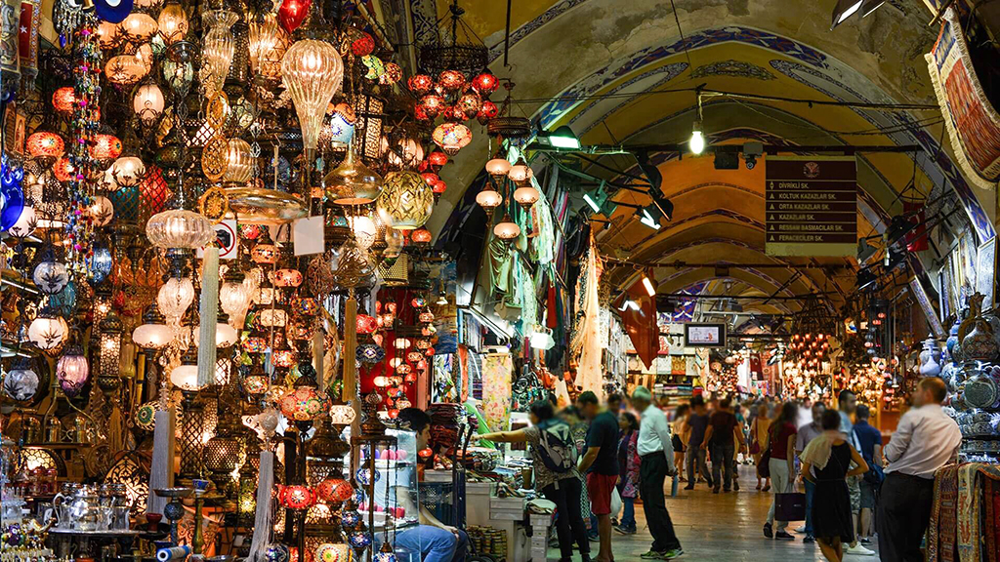

| ANASAYFA | İLETİŞİM | YAPIM | HAKKIMIZDA |
| KAPALI ÇARŞI/İSTANBUL |
|  |
Kapalıçarşı'nın çekirdeğini oluşturan iki bedestenden İç Bedesten yani Cevahir Bedesteni müellifler arasında tartışmalı olmakla beraber büyük olasılıkla Bizans'tan kalma bir yapı olup 48 m x 36 m ölçülerindedir. Yeni Bedesten ise 1460 yılında Fatih Sultan Mehmet tarafından yaptırılan Kapalıçarşı'nın ikinci önemli yapısıdır ve Sandal Bedesteni olarak anılmaktadır. Burada bir yolu pamuk bir yolu ipekten dokunan ve Sandal adı verilen kumaş satıldığı için Sandal Bedesteni ismi verilmiştir.
Fatih Sultan Mehmet'in Kapalıçarşı'nın inşaatına başladığı yıl olan 1460 Kapalıçarşı'nın kuruluş yılı olarak kabul görmüştür. Asıl büyük çarşı ise Kanuni Sultan Süleyman tarafından ahşap olarak inşa ettirilmiştir.
Dev ölçülü bir labirent gibi, 30.700 metrekarede 66 kadar sokağı, 4.000 kadar dükkânı ile Kapalıçarşı, İstanbul’un görülmesi gereken, benzersiz bir merkezidir. Adeta bir şehri andıran, bütünü ile örtülü bu site zaman içerisinde gelişip büyümüştür. İçinde son zamanlara kadar 5 cami, 1 mektep, 7 çeşme, 10 kuyu, 1 sebil, 1 şadırvan, 24 kapı, 17 han bulunmaktaydı.
15. yüzyıldan kalan kalın duvarlı, bir seri kubbe ile örtülü eski iki yapının etrafı sonraki yüzyıllarda, gelişen sokakların üzerleri örtülerek, ekler yapılarak bir alışveriş merkezi haline gelmiştir. Geçmişte burası her sokağında belirli mesleklerin yer aldığı ve bunların da, el işi imalatının (manifaktür) sıkı denetim altında bulundurulduğu, ticari ahlak ve törelere çok saygı gösterilen bir çarşı idi. Her türlü değerli kumaş, mücevherat, silah, antika eşya, konusunda nesillerce uzmanlaşmış aileler tarafından, tam bir güven içinde satışa sunulurdu. Geçen yüzyılın sonlarında deprem ve birkaç büyük yangın geçiren Kapalıçarşı eskisi gibi onarılmışsa da, geçmişteki özellikleri değişikliğe uğramıştır.
Bütün dükkânların genişliği aynı olacak şekilde inşa edilmiştir. Her sokakta ayrı ürünün ustaları loncalar halinde bulunurdu (yorgancılar, terlikçiler vs.) Satıcılar arasında rekâbet kesinlikle yasaktı. Hatta bir usta, tezgâhını dükkânın önüne çıkarıp kalabalığa göstererek ürün işleyemezdi. Ürünlere devletin belirlediğinden yüksek fiyat konulamazdı.